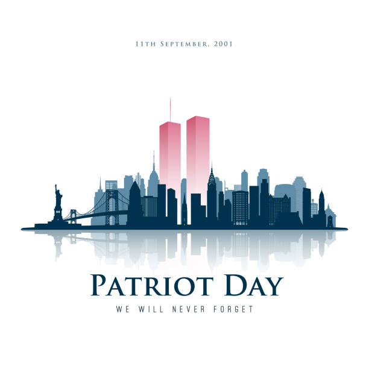

History of 9/11
I WILL BE GOING OVER A FULL HISTORY OF 9/11. IF YOU ARE UNCOMFORTABLE WITH THIS TOPIC SKIP OVER THIS ENTIRELY!
9/11 is known as one of the deadliest attacks in US history to this day. As many know there were planes hijacked and used to target many important spots of the USA. Many believe or learned that the only place attacked that day were the Twin Towers in NYC but that's simply not true. Some also never went into the full truth of what happened, yes it was terrorists, but who and where? This is a more detailed history of what happened. Prior to 9/11 the deadliest attack in the United States had been the Oklahoma City bombing. In 1995, two United States citizens set off a bomb in front of a city building. This important to know because it'll really set into place how deadly and horrible 9/11 was compared to what had ever happened before. Osama Bin Laden. Is this a name you've heard before or recognize? Many people may not know who this person is off the top of their head. He was a religious extremist who believed violence could really be an acceptable method to spread and enforce beliefs. Horrible right? He began to collect others who shared similar beliefs and in 1988 he formed an organization with these people called Al-Qaeda. A main goal of Al-Qaeda was getting the United States to withdraw its presence in Middle Eastern countries. This would allow the group's political and religious beliefs to take power. They started by commiting multiple small-scale acts of terrorism against the US around the 1990s. This was also around the time when Bin Laden began planning an attack larger than ever, anything Al-Qaeda has ever done. Morning arises, September 11th 2001. Nineteen members had been selected, they were then divided into four groups. They boarded four airplanes, not just the two most people know about. They used knives and box cutters to take control and hijack the planes - to then use the planes as weapons. Their first target: the Twin Towers, two 110-story skyscrapers that were part of the world trade center in Manhatten, New York. Thousands were working in those towers. At approximately 8:45 AM, five of the Al-Qaeda hijackers flew one of the four planes into directly into the North Tower. At first, to the public it appeared as a horrible accident, then a second plane with another five Al-Qaeda members hit the south tower. Witnesses near the scene and watchers from home recognized this as a terrorist attack. People fled in horror away from the towers as the smoke spread. First Responds sprinted towards the towers, many of them would lose their lives in an effort to save others. Within two hours of the attack the towers collapsed. Unbreathable waves of ash, smoke, and all else spread unsafely fast into the air, from some point down, the city was nothing but a grey dot. The collapse of the towers had been broadcast live on television for people to see. Folks nationwide felt hopeless and terrified. This is where people tend to pause and can't say what happens next. American Flight 77, five more members hours later crashed a third of the four planes into the official headquarters of the US military. The Pentagon, Washington D.C. Meanwhile on the fourth airplane; American 93, there were four members who had already hijacked and gotten control of that plane. However, passengers on 93 gained knowledge of the previous attacks on calls with people having witnessed the other attacks. To prevent the use of their airplane as a weapon they fought against the Al-Qaeda members to then overtake the flight. Intelligence officials believe that this flight was targeting the US Capitol building. The passengers had successfully prevented the plane from hitting any important buildings but sadly it had crash-landed into a field in Pennsylvania killing everyone aboard. This is the full history about what had happened that day. But what about the aftermath and effects it had on the United States? At the time of these attacks there had been 4,000 planes in the air, all of which had been grounded as quickly as possible to prevent the chance of any further violence. It seemed as though the attacks were over.

People across the country and even the world wanted to help. Volunteers and workers alike provided tremendous amounts of support. Searching for missing bodies, giving personal support to survivors, cleaning rubble. The U.S. military on the other hand sent attacks to Middle Eastern countries, primarily Afganhistan, targetting AL-Qaeda and the Taliban - a political group that provided shelter and support for Al-Qaeda. In 2011 U.S Navy Seals located and killed Bin Laden, U.S. presence in the Middle East would continue for years after the event. Following the attacks, the US created both the Department of Homeland Security and the Transportation Security Administration, otherwise known as TSA. Legislation passed the Patriot Act, increasing government surveillance abilities and powers for them, civil rights activists deemed some parts unconstitutional. It allegedly violated free speech, privacy, and due process. Security measures at places like airports meant for travel increased drastically from that point on. As well as everyday life changing by a landslide for most. Many talk about the unity and kindness that came after 9/11, that is all true, but what most fail to mention is the fear, the hatred, the racism that got spread around. Al-Qaeda had commited the attacks in an extreme branch of Islam and the majority of muslims condemned the attacks, claming no part of it. However, many muslims in the United States became targets for racist stereotypes, hate crimes, and discrimination. Hate crimes against muslims in the US spiked after 2001 and has never lowered to it's original number since then. One wholesome bit to end this retell, is that annually in the heart of Manhatten where the Twin Towers once were, there are two lights that shine from the memorial to represent the towers in honor of those who passed.
This is a lesser version of the history.
Two planes hijacked by terrorists hit the Twin Towers, part of the world trade center, morning of 9/11. The Twin Towers were located in Manhatten, a borough of New York City in New York. Somewhere across the country in Washington D.C. another plane had hit the pentagon. There was a fourth plane of passengers where they had tried to regain control, they gladly had and prevented it hitting any important buildings but it had crash-landed in a field in Pennsylvania. The group behind this all the Al-Qaeda, they believed violence was the answer.